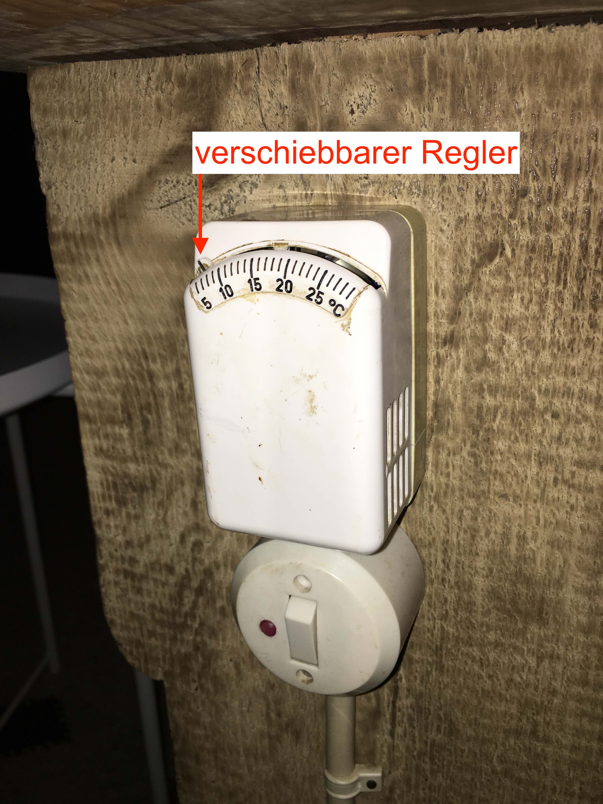

Der Raum für die Pumpe, Heizung und das Leitungswasser befindet sich unterhalb der Hauseingangstür (s.Bild)
Als erstes muss der Hahn für die Wasserzufuhr aufgedreht werden (s. Bild). Damit der Wasserdruck ausreichend ist muss wie im zweiten Bild zu sehen die Pumpe nach rechts für den automatischen Betrieb gedreht werden.
Sollte die Pumpe im Automatikmodus nicht anspringen wenn Wasser läuft ist möglicherweise der Druck im großen Grünen Behälter zu gering, da die Automatikfunktion erst ab etwa 1 Bar anspringt. Ist dies der Fall kann die Pumpe kurzzeitig auf den Handbetrieb (links) umgestellt werden, dann läuft sie dauerhaft.
Steigt der Druck im Behälter wieder über 1 Bar an, so kann wieder auf den Automatikmodus gestellt werden.
Am Ende des Aufenthalts bitte die Pumpe wieder ausschalten und den Hahn zudrehen.
Das Haus ist an eine Quelle mit Trinkwasserqualität angeschlossen. Jedoch sind die Rohre innerhalb des Hauses so alt, dass das Wasser aus dem Hahn nicht gut schmeckt.
Die erste Möglichkeit das Wasser aus der Quelle abzugreifen befindet sich direkt links wenn man den Raum mit Pumpe und Heizung betritt.
Über diesen Wasserhahn (s. Bild) lässt sich der in der Küche vorhandene Kanister befüllen. Dieses Wasser kann problemlos getrunken werden und eignet sich auch zum Kochen und für die Kaffeemaschine.
Um die Heizung einzuschalten muss lediglich der Schalter betätigt werden (s. Bild).
Zur Einstellung der Temperatur befindet sich ein Thermostat (s. Bild) im Wohnbereich. Am unteren Ende einer der Holzbalken auf der linken Seite wenn man das Wohn- und Esszimmer betritt. Der Schalter unterhalb des Thermostates besitzt keine Funktion mehr.
Die Heizung steuert anfangs über die eingestellt Temperatur und braucht eine Weile 4-5h bis die am Thermostat eingestellte Temperatur kostant gehalten wird.
